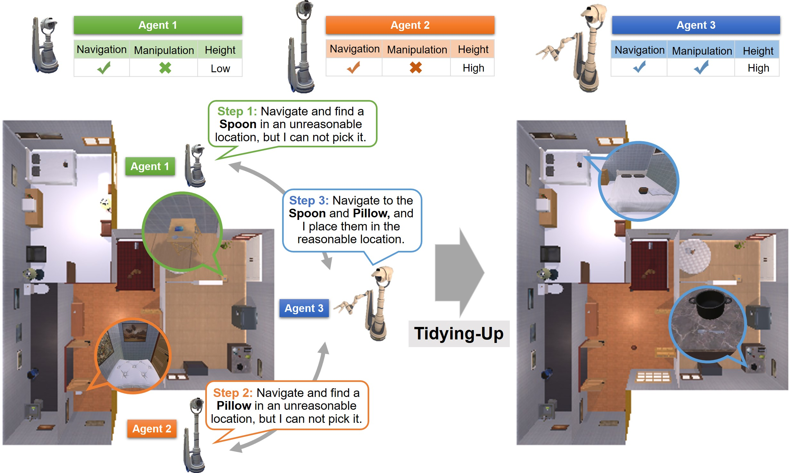
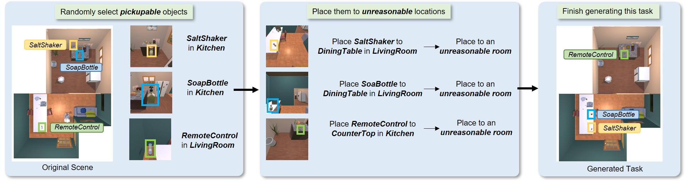
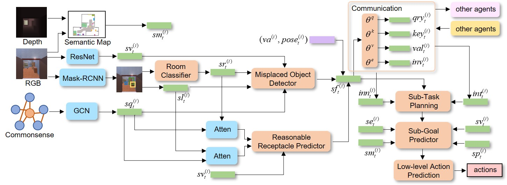

Multi-agent embodied tasks have recently been studied in complex indoor visual environments. Collaboration among multiple agents can improve work efficiency and has significant practical value. However, most of the existing research focuses on homogeneous multi-agent tasks. Compared with homogeneous agents, heterogeneous agents can leverage their different capabilities to allocate corresponding sub-tasks and cooperate to complete complex tasks. Heterogeneous multi-agent tasks are common in real-world scenarios, and the collaboration strategy among heterogeneous agents is a challenging and important problem to be solved. To study collaboration among heterogeneous agents, we propose the heterogeneous multi-agent tidying-up task, in which multiple heterogeneous agents with different capabilities collaborate with each other to detect misplaced objects and place them in reasonable locations. This is a demanding task since it requires agents to make the best use of their different capabilities to conduct reasonable task planning and complete the whole task. To solve this task, we build a heterogeneous multi-agent tidying-up benchmark dataset in a large number of houses with multiple rooms based on ProcTHOR-10K. We propose the hierarchical decision model based on misplaced object detection, reasonable receptacle prediction, as well as the handshake-based group communication mechanism. Extensive experiments are conducted to demonstrate the effectiveness of the proposed model.
To study the collaboration among heterogeneous agents, we propose the heterogeneous embodied multi-agent tidying-up task. We also provide a program to generate the benchmark dataset for this task in ProcTHOR-10K, and the process of generating it from the original scene in ProcTHOR-10K is shown as follows. For each sample in the dataset, we randomly select k objects from the original house in ProcTHOR-10K and then change their current locations to unreasonable receptacles or unreasonable rooms to generate the task data.
The proposed model consists of four main modules: the misplaced object detector, the reasonable receptacle predictor, the communication module, and the hierarchical decision. The overview of this model is shown as follows. The misplaced object detector judges whether there exists an object placed in an unreasonable location. The reasonable receptacle predictor generates a reasonable receptacle and room type to place the misplaced objects. The communication module transmits the communication information to other heterogeneous agents. The hierarchical decision module predicts the next sub-task, sub-goal, and next actions for each agent to execute.
In Setting I, three agents with the same visual perceprion ability but different action abilities and morphological characteristics. Agent 1 only has the navigation ability with the low height. Agent 2 only has the navigation ability and its height is high. Agent 3 has both the navigation and manipulation abilities and its height is high. The videos of results in the Single-Room scene and the Cross-Room scene are shown as follows respectively.
In Setting II, four agents with the same visual perceprion ability but different action abilities and morphological characteristics. Agent 1 only has the navigation ability with the low height. Agent 2 only has the navigation ability and its height is high. Agent 3 has both the navigation and manipulation abilities and its height is high. Agent 4 has the same abilities with Agent 3. The videos of results in the Single-Room scene and the Cross-Room scene are shown as follows respectively.
@article{park2021nerfies,
author = {Park, Keunhong and Sinha, Utkarsh and Barron, Jonathan T. and Bouaziz, Sofien and Goldman, Dan B and Seitz, Steven M. and Martin-Brualla, Ricardo},
title = {Nerfies: Deformable Neural Radiance Fields},
journal = {ICCV},
year = {2021},
}